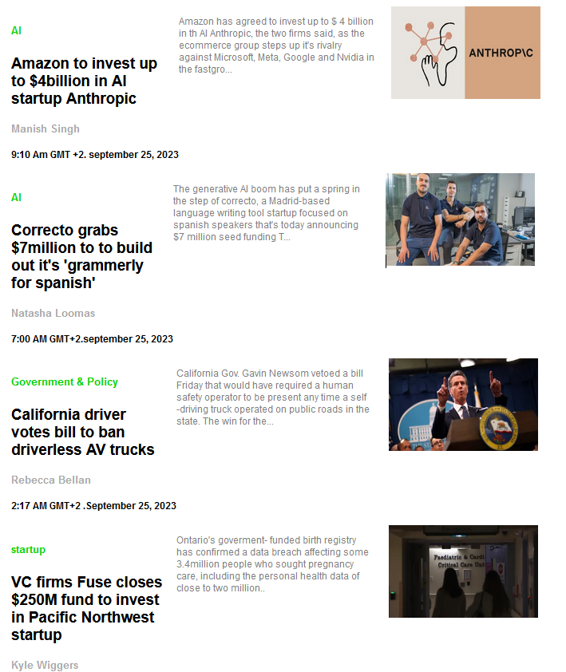
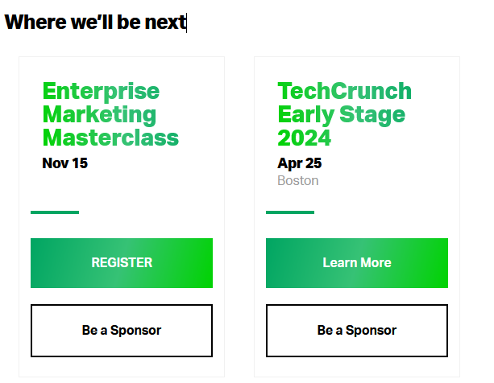
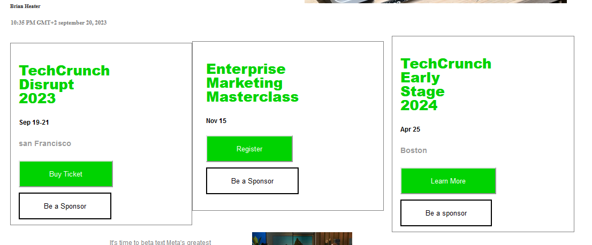
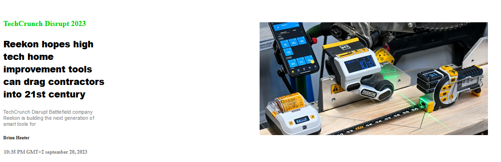
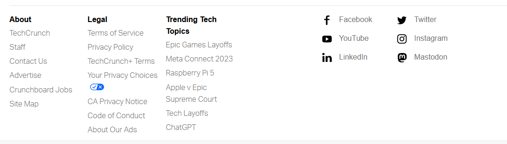
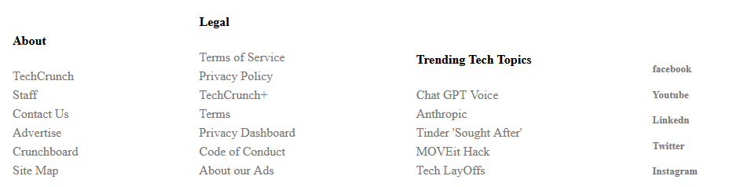
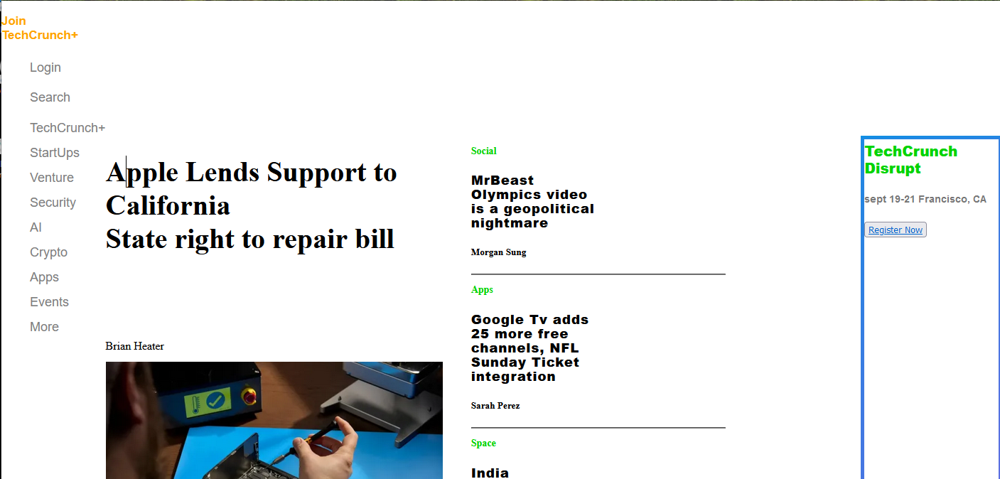
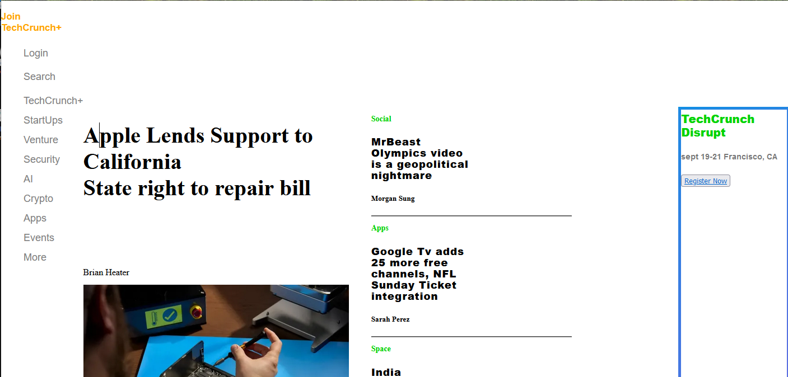

TechCrunch Feedback
Congratulations on Finishing the TechCrunch Site!
You did WAY MORE than what I originally "assigned" you to do and to begin with I am VERY VERY impressed!!!! This is far more than I expected and much more than was reasonable at the skill level you started out as. Which is very much a different level than where you are now, so congratulations!!!!
Now to the feedback. There's a lot, but it's a very long page, so that's to be expected. And I'm focusing on structural elements and I'm hoping that you plan to make adjustments to the page as well to further your learning.
First, the good. The basic structure of the TechCrunch website is fairly complex and you got the basic structures down and that is something you should be EXTREMELY proud of! It was hard and it was a lot of work and you did it! I'm very proud of you!
Now for more detailed feedback of things that just need to be tidied up:
- Very large gap at the top of the page’s main sections (not including menu)
- Left side bar is missing the TechCrunch logo - did you forget to push your images?
- “Join TechCrunch” is on two lines instead of one and is flush against the left side of the browser when it should not be
- TechCrunch Logo, Join TechCrunch, and Login should be grouped together separately from the rest of the sidebar menu
- Search on the sidebar menu is missing the magnifying glass
- TechCrunch disrupt box is very tall when it should be relatively short
- Main content section dominates, is about 60% of the main section. On Obinna’s, is about 40% of the main section.
- The headlines/text content of the 4 mini stories are full width of their containers and are about 25% of their container on Obinna’s version
- Large space between heading of main story and image on Obinna’s version
- The TechCrunch sidebar menu should be fixed and remain in place as the user scrolls
- This section looks beautiful! It could be tidied up a little bit (fonts, exact spacing, etc) but that’s fussing and getting too nitpicky, it’s beautiful, very well done!: 
- “Where We’ll Be Next” section:
- I think you forgot to remove your borders, but that’s okay, we all do that sometimes, that’s what a QA person is for
- Their version currently has two items, but I assume when you did this it had three items - this is irrelevant to the feedback (commenting so you know I realize this)
- Your version is missing the “Where we’ll be next” heading
- The buttons do not line up across sections - see how the “enterprise marketing masterclass” and “techcrunch early stage 2024” events are in both versions, but in the original version the buttons line up vertically with each other, but in your version they do not? In your version, because the enterprise marketing class does not have a location, the buttons are one line higher than in the TechCrunch early stage 2024 block. In the TechCrunch site, that space is allowed to be blank without trying to fill it in.


- For these two-part sections:
- This is a very good execution! I’m very impressed! You did very well! My only suggestions are to pay closer attention to spacing and exactitude, but you have the right idea, it’s just about fussing with the proportions here.

- Footer:
- The headings at the top of the columns on TechCrunch's footer all line up horizontally, but on your version they do not.
- Also notice how the columns on TechCrunch's footers all cluster closely together rather than being spaced widely apart as they are on your footer
- Also notice how the social links are in two columns rather than just one


 

General Feedback
Some of this feedback are things I’m learning too to play nicely with other others aka on teams so I’m not even going to pretend I’m good at them too:
- Descriptive class and ID names - “container” is helpful but numbering them off is less helpful. “container-main” or “container-side” or “container-event” are more helpful names
- :hover does not work with a space, the below line needs to be nav ul:hover
nav ul: hover{
color: orange;
}
.container {...}
.container h5 {...}
.container ul { …}
#okay1{
width: 136px;
font-size: 1.625rem;
font-family: aktiv-grostesk,sans-serif;
font-weight: 900;
line-height: 1;
}
#okay2{
width: 136px;
font-size: 1.625rem;
font-family: aktiv-grostesk,sans-serif;
font-weight: 900;
line-height: 1;
}
#okay3{
width: 136px;
font-size: 1.625rem;
font-family: aktiv-grostesk,sans-serif;
font-weight: 900;
line-height: 1;
}
Detail Work
So, I was thinking about how there's just a TON of little details to think about when it comes to taking a design and making it into a website - taking what you see on your screen, in a file, or on a piece of paper and making it happen as a website. And it's sort of like an internal checklist that you develop over time that you don't even think about anymore. But it's totally okay and a good idea to develop your own actual checklist when you're starting out of things to check to make sure you're not missing any details.
Those things might include:
- Font Family
- Font Size
- Font Style
- Colors: Fonts, Graphics, Logos, Images, Horizontal Rules, Links, etc
- Images Sizes, shapes, relationships to other elements
- Anchors and links
- Navigation: horizontal, vertical, fixed
- Buttons: static, scroll-over effects, click effects, borders, shadows
- Borders, Margins, and Paddings on every element
- Responsiveness and Accessibiliy
- Etc.
You'll develop your own list over time of things that you, personally, tend to forget. For me, it tends to be media queries. I remember to accomodate desktop browser differences and sizes pretty well (including tablets!), but I tend to forget mobile phones altogether. :D And naming my classes/IDs/variables sensible things so they make sense to other people and Future Me. Remember, you don't have to store everything in your head - you can use notes, checklists, and other processes (you can write down processes, too!) to ensure you do good work.
Well done, Obinna! If you were nearer to me, I'd bake you some cookies - you're doing brilliantly.